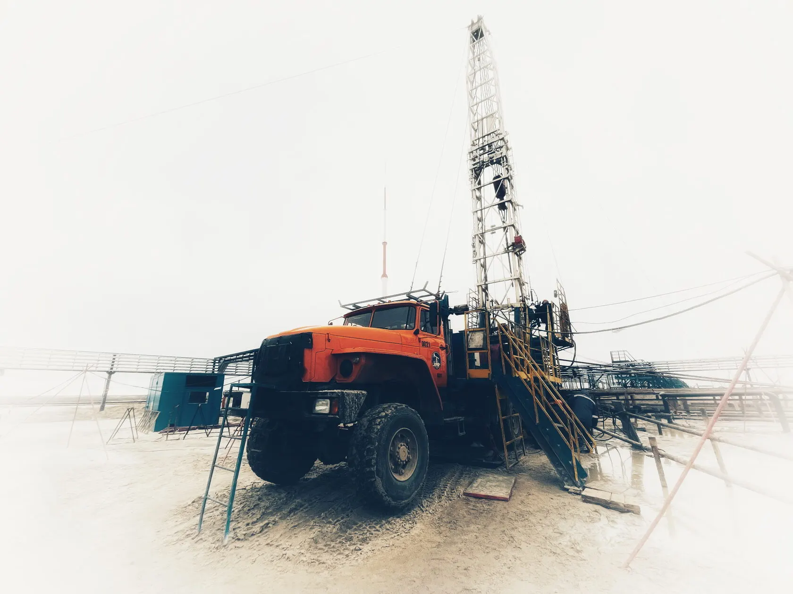
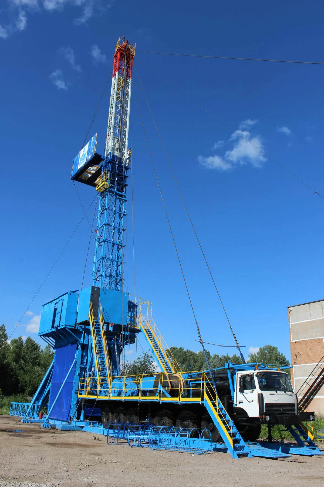
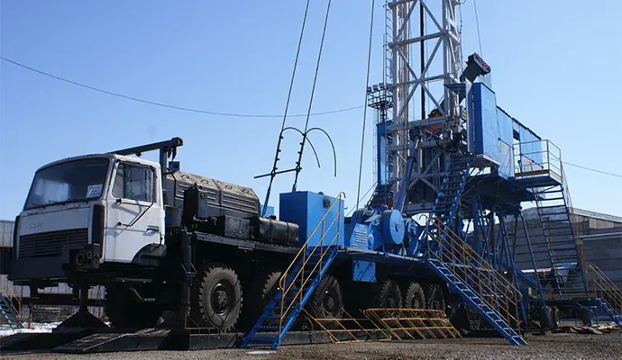
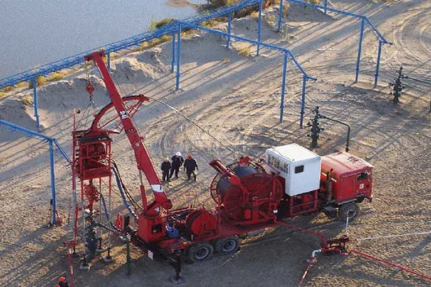
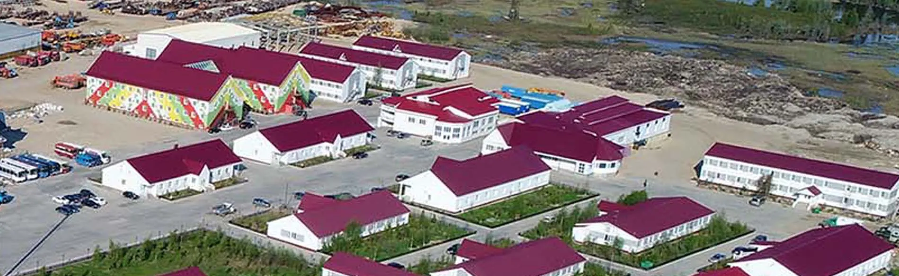
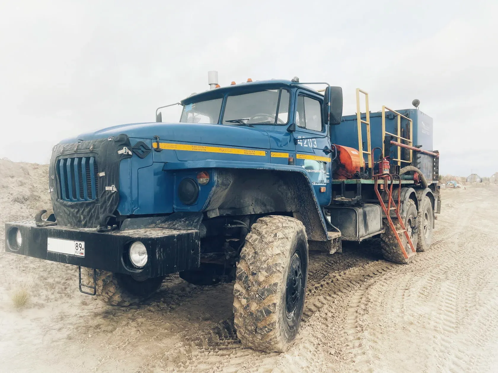
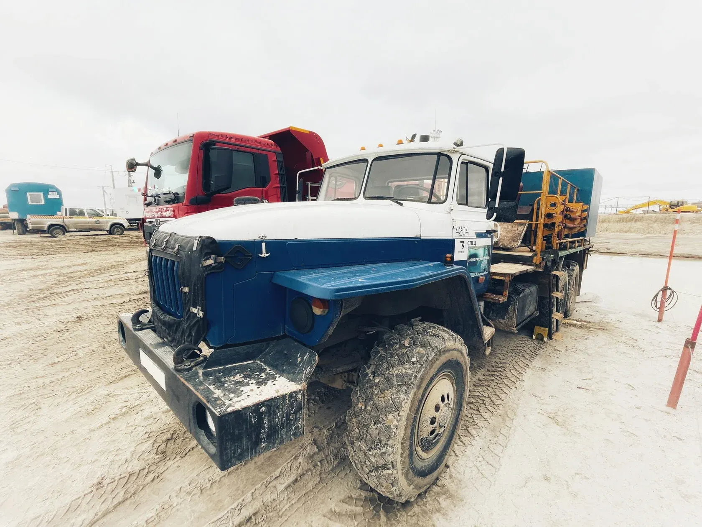
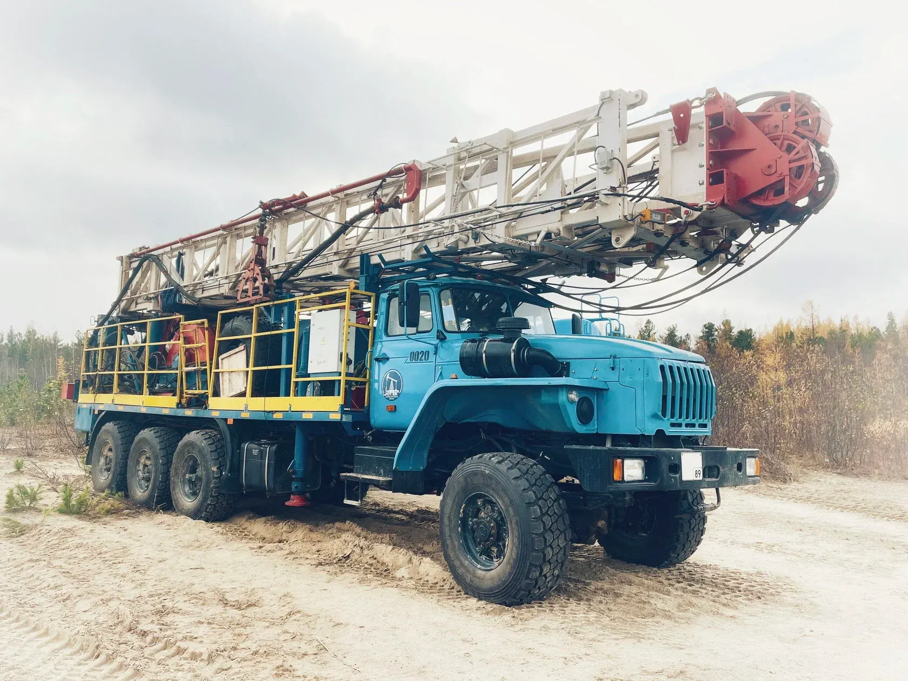
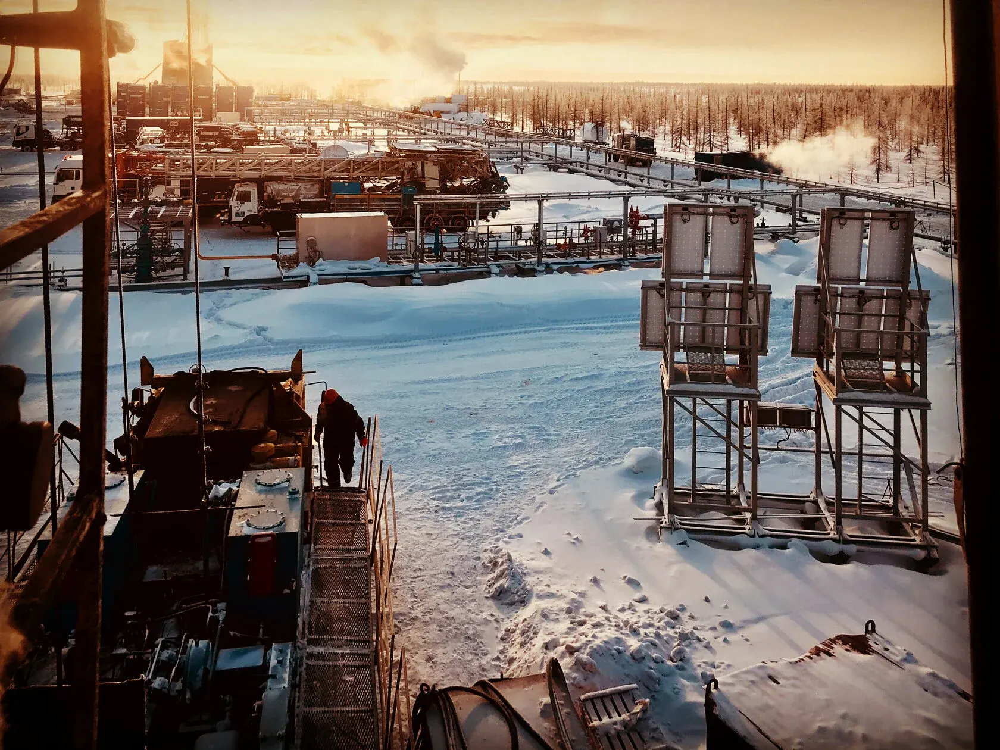
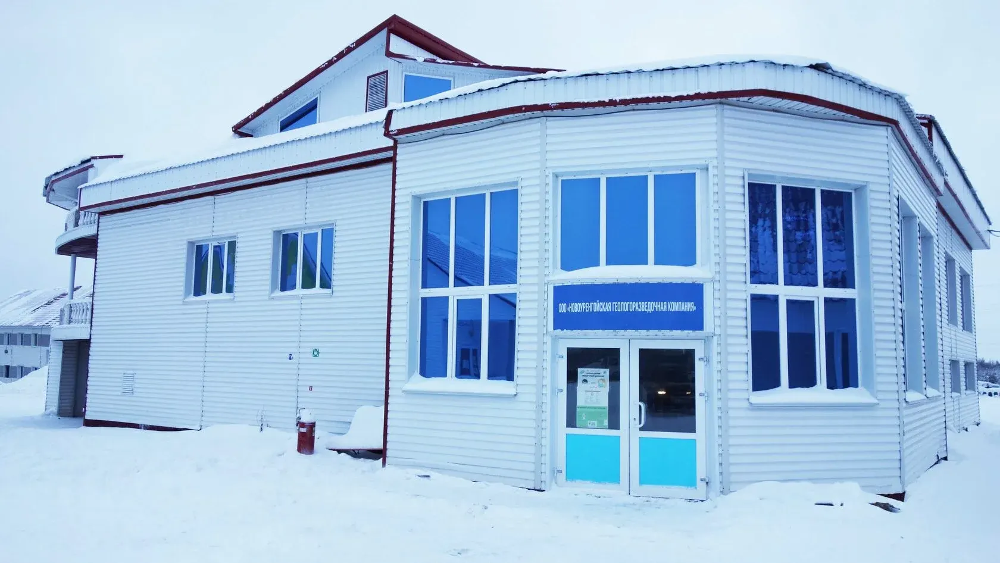

Полный цикл ремонта и освоения скважин
Новоуренгойская геологоразведочная компания. Основана 9 августа 2012 года в Новом Уренгое, работает на месторождениях ЯНАО.
КРС
освоения
ГНКТ

Керновый ящик наших работ
Каждый образец в ящике – вид работ. Достаньте образец, чтобы прочитать этикетку.

Кто выходит на скважину
- 4
бригады КРС, тяжёлые
Передвижные подъёмные агрегаты МБУ‑125 (140) т
- 5
бригад КРС
Передвижные подъёмные агрегаты УПА‑60/80 и УБРС‑80
- 2
звена освоения
Освоение скважин, сопровождение работ флотами ГРП и ГНКТ
- 1
флот ГНКТ
Гибкие трубы: промывка, азотное освоение, геофизика


Своя база в Новом Уренгое
Производственная и транспортная базы рядом с объектами, на Промысловой, 27/10. Растворы глушения на основе KCl, CaCl₂ и BaSO₄ готовим сами.

Под каким давлением проверяем
Лаборатория цементных растворов
Вязкость, плотность, фильтрация, время загустевания и прочность цемента. Для скважин с температурой на забое до 95 °C, нагрев проб до 105 °C.
Звено свинчивания
Цифровая фиксация моментов свинчивания труб НКТ и обсадных колонн, калибровка резьб, шаблонировка спецшаблонами.
Автотранспортный цех
ГСМ, вода, трубы, негабарит, мобилизация бригад, отсыпка приустьевых площадок, перевозка вахт.



Техника НУГРК на базе и в дороге

Хроника
- ООО «НУГРК» основано в Новом Уренгое.
- Победа в тендере на услуги ТКРС для АО «Арктикгаз».
- Победа в закупке услуг ТКРС и освоения скважин в ООО «Газпромнефть‑Заполярье». Договор на 5 лет.
- Формируем ещё одно звено освоения с утеплёнными замерными ёмкостями арктического исполнения.
- Восьмая бригада КРС вышла на Песцовое месторождение с установкой МБУ‑140.
Где живёт вахта
Большая часть сотрудников приезжает издалека, поэтому на территории предприятия стоят общежития гостиничного типа и столовая. На удалённых объектах работают мобильные столовые в вагон‑домах.
Спортивный комплекс с залами для волейбола и мини‑футбола, тренажёры, бассейн и сауна. Медицинское страхование, корпоративный транспорт, служебная связь, льготное питание.
- Бурильщик КРС
- Помощник бурильщика КРС
- Мастер КРС
- Электромонтёр по ремонту электрооборудования
Отдел кадров: +7 (3494) 93-16-64

Кому звонить
- Приёмная+7 (3494) 93-15-70
- Главный инженер24-42-51
- Отдел кадров93-16-64
- Юридический отдел93-16-63
- Служба ОТ, ПБ и ООС93-15-64
- Почтаoffice@nugrk.ru